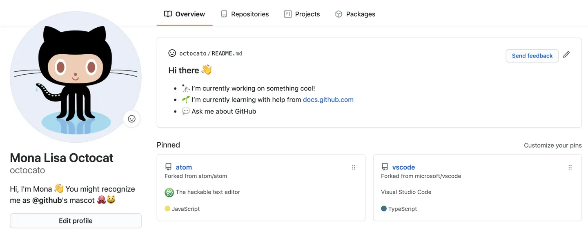

Github
Autor: Ana Karen Gomez Espinosa

Definicion:
GitHub es una herramienta esencial para los ingenieros de software que ayuda a mejorar el flujo de trabajo y promueve la colaboración. 94 millones de desarrolladores, 4 millones de organizaciones y 330 millones de repositorios forman parte de la plataforma, y la comunidad de GitHub sigue creciendo. Esta popularidad se debe a la gran cantidad de opciones disponibles para controlar y gestionar proyectos de código en cualquier lenguaje de programación o sistema operativo